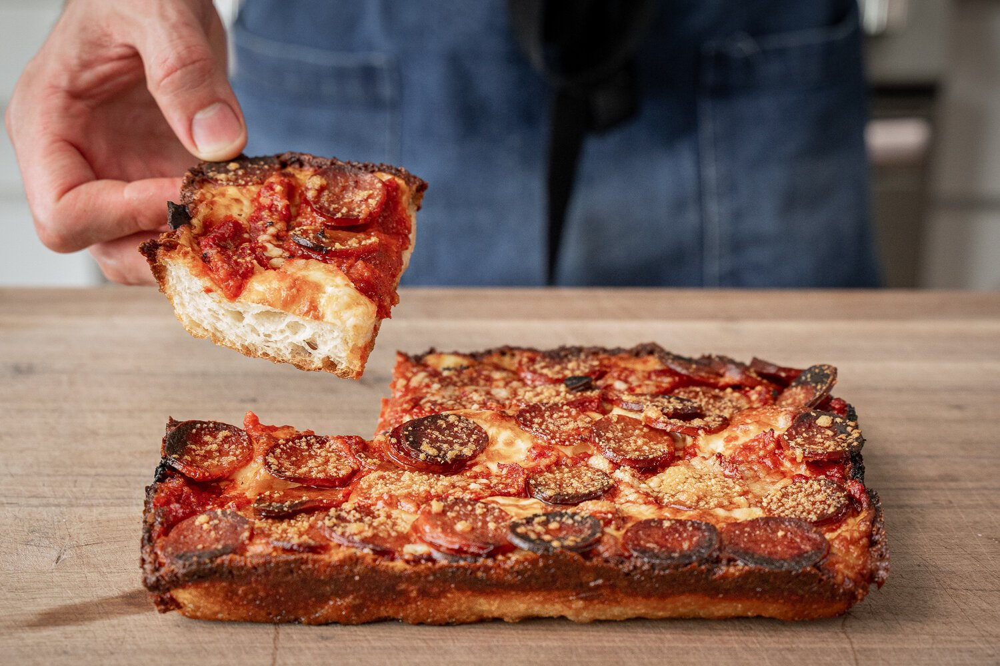

Detroit Style Pizza

Description:
Detroit style pizza = two of the world's best foods combined: pizza and
bread.
This is a true pan pizza enthusiast's pizza that yields a
thick yet light and crissssp fried dough crust and browned and crunchy
pepps.
Ingredients:
Dough
- 240g or 1 cup of 80-85 degree (fahrenheit) water
- 2g or 1tsp rapid rise yeast
- 335g or 2 1/3 c bread flour
- 7g or 1 1/4 tsp salt
-
Two 8"x10" Lloyd pans (or 8"x8" or 9"x9'"baking pan, but crust may be
less crisp)
- 4 tbsp oil (olive, avocado, etc) to coat pans
Sauce
- 28oz crushed tomato
- 50g or 3 TBSP tomato paste
- 7g 1 1/4 tsp salt
- 10g or 2 1/3 tsp sugar
- 1/2g or 1tsp dried basil
- 1/2g or 1tsp dried oregano
- 1g or 1/2 tsp chili flake
- 2 garlic cloves, minced
- 2 TBSP olive or avocado oil
Steps:
Dough
-
Combine ingredients into a medium bowl and stir with sturdy spoon.
-
Once it comes together, use a wet hand to give the dough a series of
20-30 slap and folds as shown in the video. You can also use a stand
mixer with a dough hook if preferred.
-
Cover bowl with plastic and let it sit in warm spot for 30 minutes.
-
After 30 min, build more strength into the dough by grabbing an of
dough, stretching it out, and folding back over. Rotate the dough 45-90
degreed and repeat 5-6 more times see video for technique.
-
After these stretch and folds, tuck and fold the dough a few more times
as shown in the video to shape and stretch the dough into a taught ball.
-
Wrap bowl with plastic and set in warm place for 2 hours. After the 2
hours dough should have doubled in size, be buoyant, and slightly bounce
back when poked.
-
To prep pans for dough, glug in 2 tbsp oil into each pan and smear over
bottom and sides.
- Flip dough onto floured surface and divide in half.
- Lay half of the dough into each pan and gently press to spread.
- Cover pans and allow dough to relax for 30 minutes.
-
After the 30 minutes, gently stretch and press dough to cover the bottom
of the pans.
- Cover again and let rise for 45-60mins.
Sauce
- Pour 75% of the can of tomatoes into a tall sided container.
-
To that, add tom paste, salt, sugar, basil oregano, and chile flake.
- Blend with and immersion blender (or use a standard blender).
- Add the remaining 25% of crushed tomatoes and stir.
- Preheat medium saute pan on medium.
- Add oil and garlic.
-
When garlic is golden and fragrant, add tomato mixture and stir to
combine.
- Simmer for about 25 minutes or until thickened.